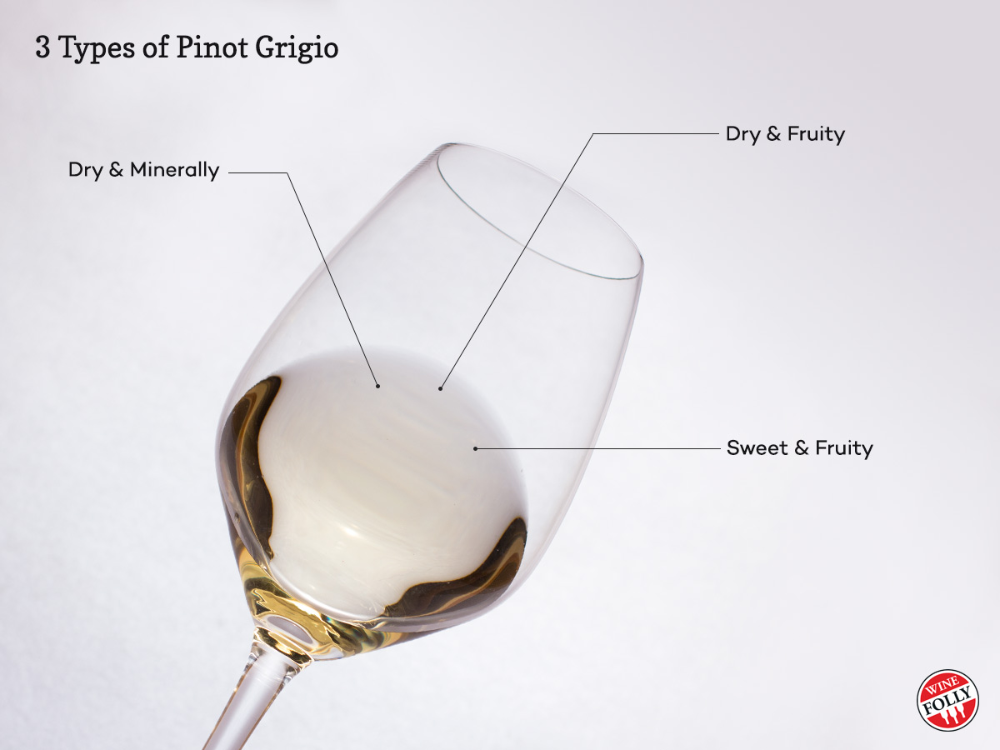
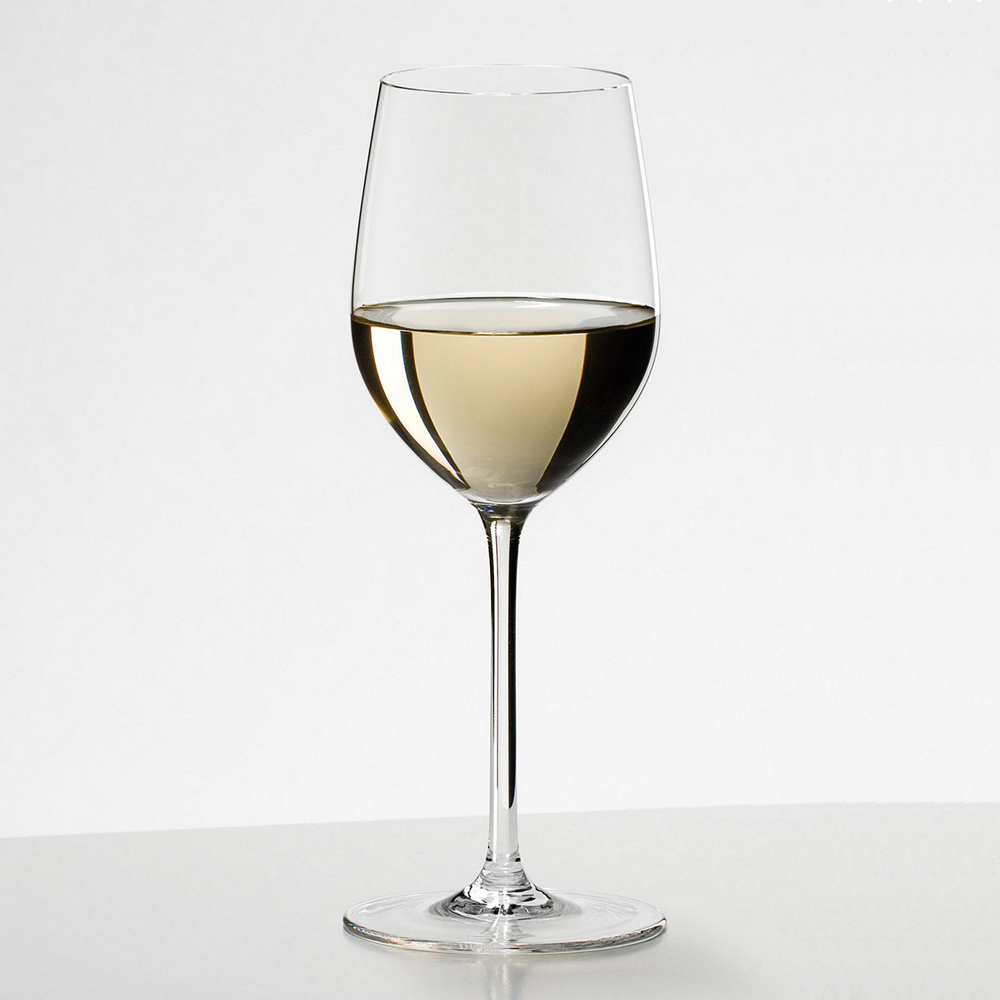
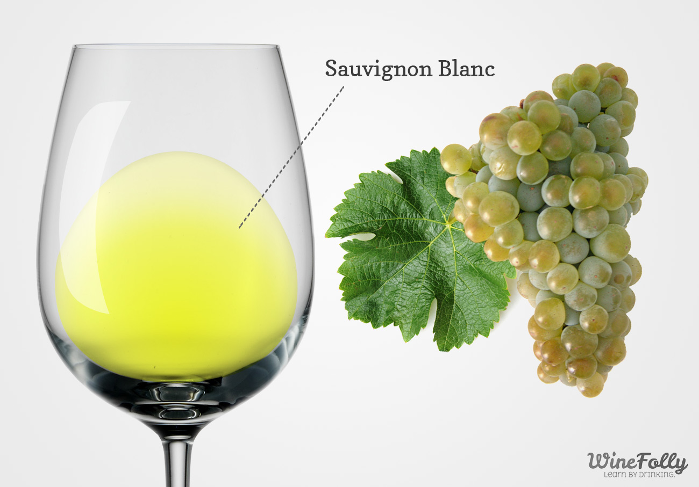

White Wines
White wine is a wine that is fermented without skin contact. The colour can be straw-yellow, yellow-green, or yellow-gold. It is produced by the alcoholic fermentation of the non-coloured pulp of grapes, which may have a skin of any colour.
Pinot Grigio
Pinot gris, pinot grigio or Grauburgunder is a white wine grape variety of the species Vitis vinifera. Thought to be a mutant clone of the pinot noir variety, it normally has a grayish-blue fruit, accounting for its name but the grapes can have a brownish pink to black and even white appearance.
Riesling

Riesling is a white grape variety which originated in the Rhine region. Riesling is an aromatic grape variety displaying flowery, almost perfumed, aromas as well as high acidity.
Chardonnay
Chardonnay is a green-skinned grape variety used in the production of white wine. The variety originated in the Burgundy wine region of eastern France, but is now grown wherever wine is produced, from England to New Zealand.
Sauvignon Blanc
Sauvignon blanc is a green-skinned grape variety that originates from the Bordeaux region of France.